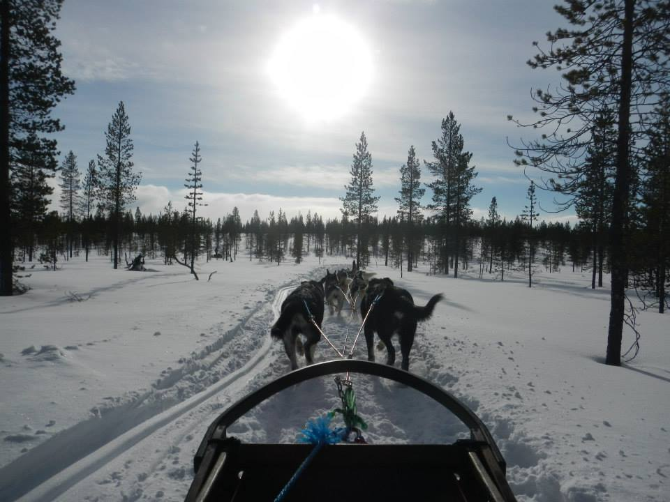
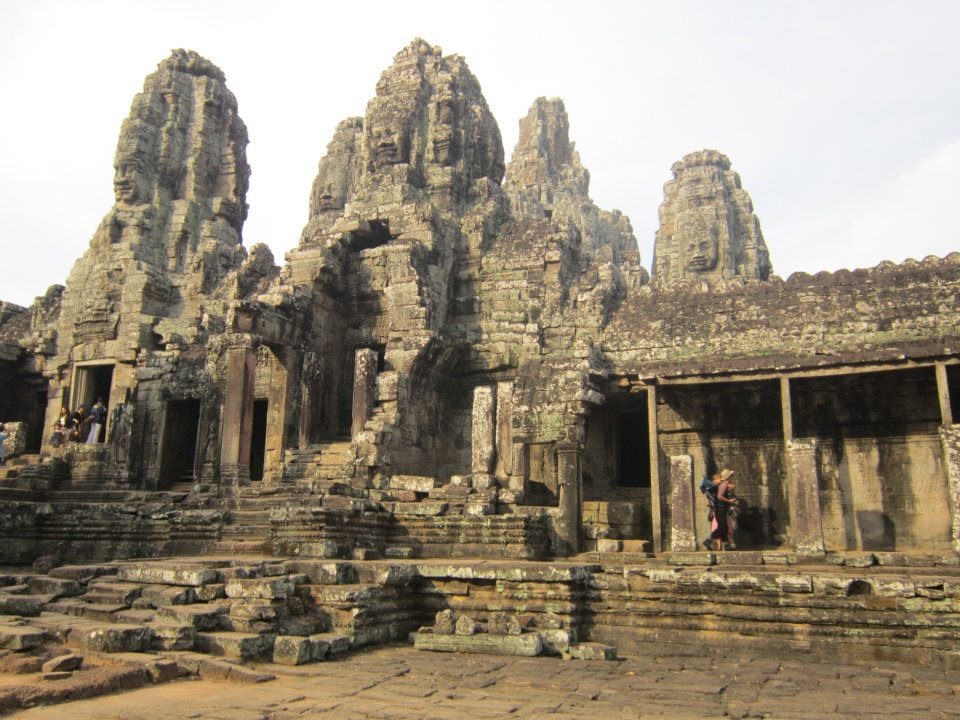
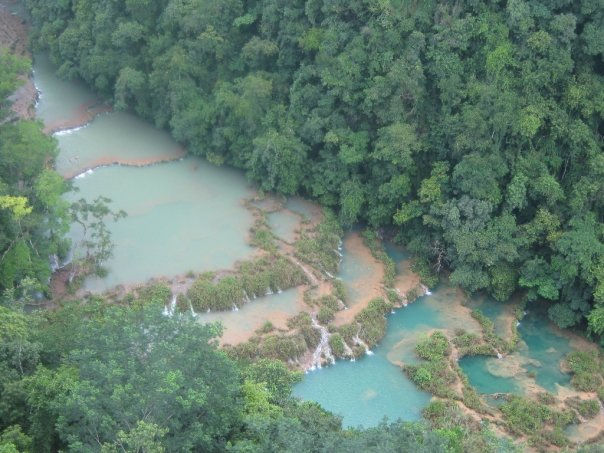

Winter in Finland

During January and February, there is almost always snow in northern and eastern Finland. Even if there’s little snow in Helsinki, there’s often up to a metre or more in the northern region of Lapland.
The winter season is definitely the best session for experiencing dog-sledding in Lapland with Siberian Huskies.
The Siberian Husky is recognised by its thick double coat and triangular ears. Echoing the outline of a wolf, the dogs are energetic and hardy, having originated from the harsh Eastern Siberian wilderness.
Ancient Civilization in Cambodia

Angkor Wat is a Buddhist temple complex in Cambodia and is the largest religious monument in the world. Originally constructed as a Hindu temple dedicated to the god Vishnu for the Khmer Empire,
it was gradually transformed into a Buddhist temple towards the end of the 12th century. It was built by the Khmer King Suryavarman II in the early 12th century as his state temple and eventual mausoleum.
Nature in Central America

Surrounded by the Pacific and Atlantic Oceans, the slender land bridge of Central America runs from Mexico to South America and is made up of seven countries — Guatemala, Belize, El Salvador, Honduras, Nicaragua, Costa Rica, and Panama.
The rain forests of Central America are some of the most biodiverse regions in the world, home to thousands of species of flora and fauna.